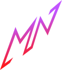

MNAnimat3D
STUDIO
Arquivo
Editar
Criar
Animar
Projeto local
Renderizar
Global
Snap
Reset
Sombreado
Nenhum objeto
Cena 3D Vazia
Adicione formas ou um personagem para começar
Linha do tempo
TAKE 01
Auto key
/ 240
24
30
60
FPS
⌄
Objeto selecionado
Posição
Rotação
Escala
Registrar pose
K
Remover key
Movimento suave
Criar
Mover
Girar
Animar
Editar
×
Exportar sua criação
Escolha o formato final. A cena e a animação permanecem totalmente locais.
Resolução
HD · 1280 × 720
Full HD · 1920 × 1080
4K · 3840 × 2160 (Ultra HD)
Não mostrar controladores e gizmos na renderização
Imagem PNG
Frame atual em alta qualidade
Animação MP4 (4K / HD)
Formato MP4 universal com áudio
Animação WebM
Formato WebM com áudio
Modelo GLB
Geometria, rig e keyframes
Modelo OBJ
Geometria estática universal
Preparando render...